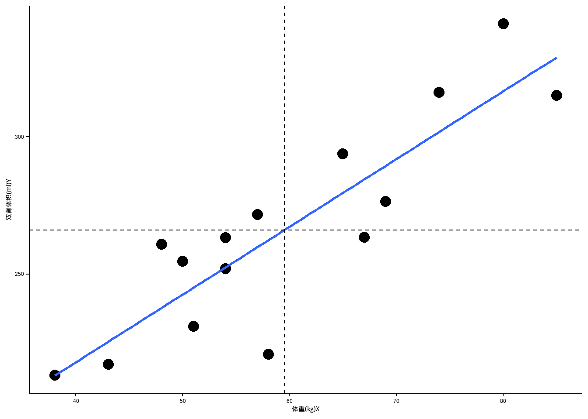
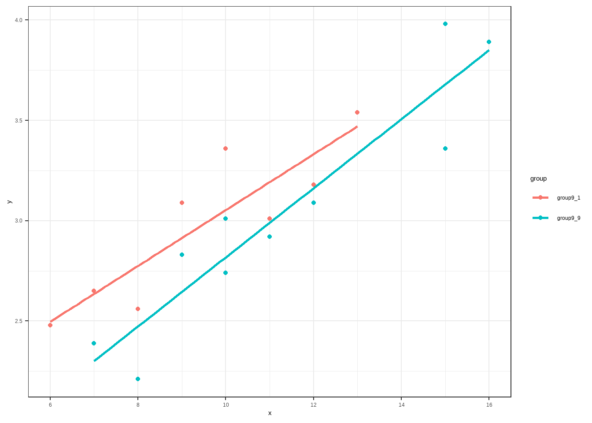
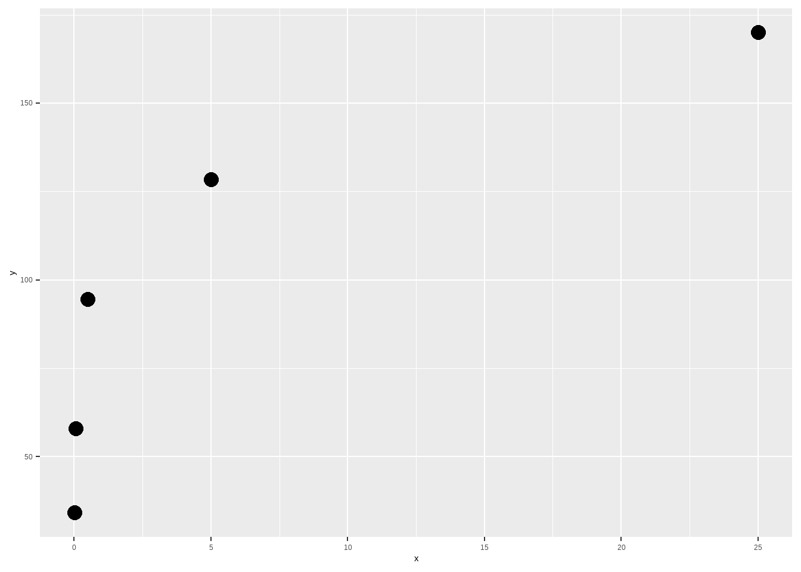
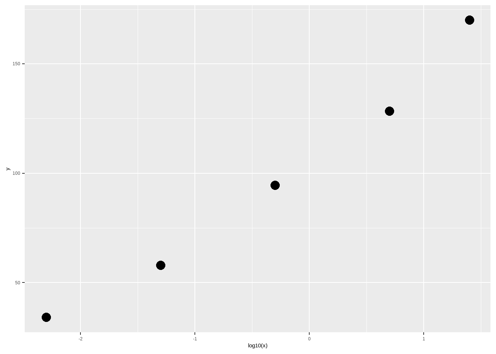
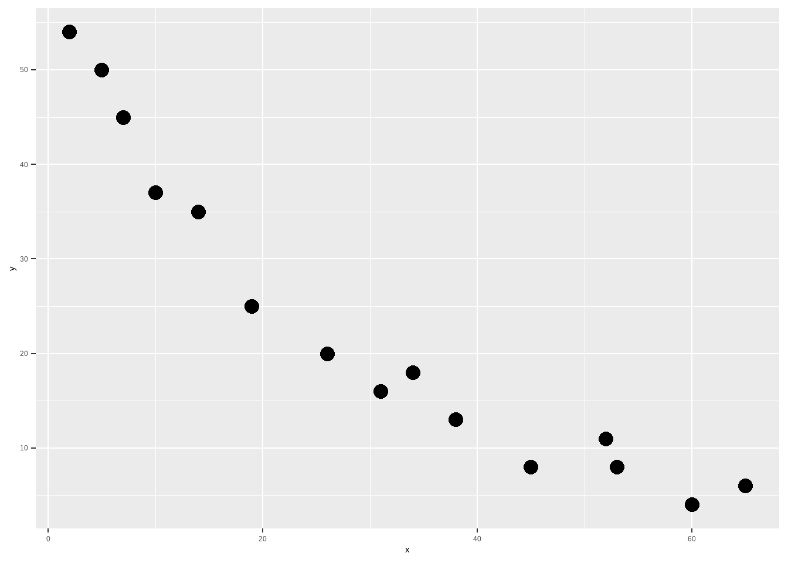
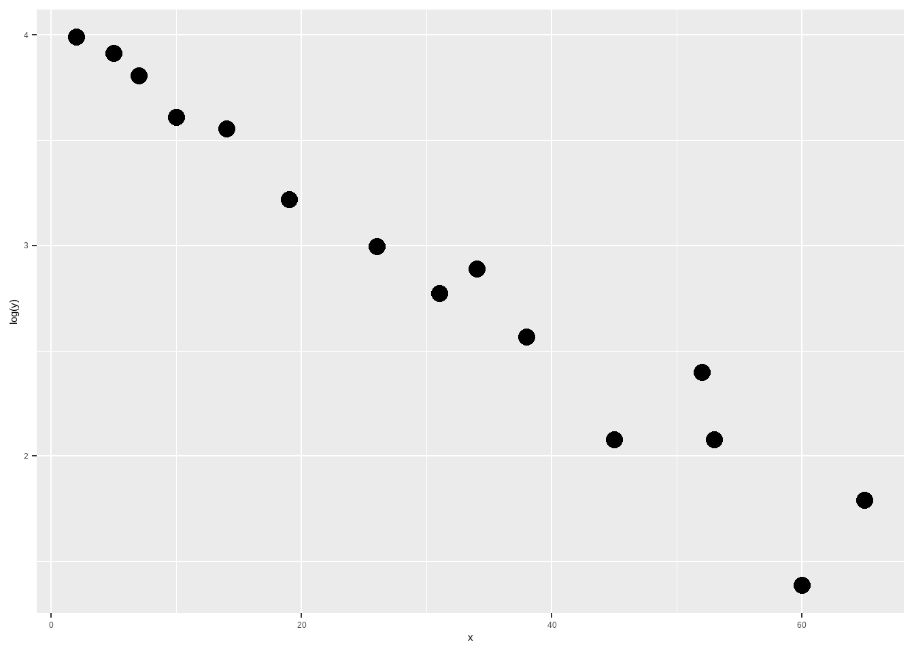

data9_1 <- data.frame(x = c(13,11,9,6,8,10,12,7),
y = c(3.54,3.01,3.09,2.48,2.56,3.36,3.18,2.65))6 双变量回归与相关
t检验、多样本均数比较的方差分析、卡方检验、秩转换的非参数检验，都是着重于描述某一变量的统计特征（或者叫分布情况）或比较该变量在不同组别之间的差别。但是在大量医学实践中，经常会遇到两个变量关系的研究，比如：两个变量有没有相关关系？是正相关/负相关？有没有直线相关或者曲线相关关系？
6.1 直线回归
孙振球《医学统计学》第4版例9-1、例9-2、例9-3、例9-4。
某地方病研究所调查了8名正常儿童的尿肌酐含量（mmol/24h），估计尿肌酐含量（Y)对其年龄（X）的直线回归方程。
建立回归方程，书中对于最小二乘法写了非常多内容，但是用代码就是1行即可：
fit <- lm(y ~ x, data = data9_1)
summary(fit) # 查看模型结果
##
## Call:
## lm(formula = y ~ x, data = data9_1)
##
## Residuals:
## Min 1Q Median 3Q Max
## -0.21500 -0.15937 -0.00125 0.09583 0.30667
##
## Coefficients:
## Estimate Std. Error t value Pr(>|t|)
## (Intercept) 1.66167 0.29700 5.595 0.00139 **
## x 0.13917 0.03039 4.579 0.00377 **
## ---
## Signif. codes: 0 '***' 0.001 '**' 0.01 '*' 0.05 '.' 0.1 ' ' 1
##
## Residual standard error: 0.197 on 6 degrees of freedom
## Multiple R-squared: 0.7775, Adjusted R-squared: 0.7404
## F-statistic: 20.97 on 1 and 6 DF, p-value: 0.003774截距是1.66167，x的系数是0.13917（也就是这条直线的斜率），对x这个变量进行假设检验得出：t=4.579，p=0.00377。
同时该结果也给出了回归方程的假设检验结果：F-statistic: 20.97，p-value: 0.003774。
例9-3，计算回归系数的95%的可信区间：
# β值的95%可信区间
confint(fit)
## 2.5 % 97.5 %
## (Intercept) 0.93493789 2.388395
## x 0.06480131 0.213532我们可以通过函数的方式分别获取模型信息：
# β值
coefficients(fit)
## (Intercept) x
## 1.6616667 0.1391667
# β值
coef(fit)
## (Intercept) x
## 1.6616667 0.1391667
# OR值
exp(coef(fit))
## (Intercept) x
## 5.268084 1.149316
# OR值的95%的可信区间
exp(confint(fit))
## 2.5 % 97.5 %
## (Intercept) 2.547055 10.895997
## x 1.066947 1.238043或者直接使用broom计算即可：
broom::tidy(fit,conf.int = T)
## # A tibble: 2 × 7
## term estimate std.error statistic p.value conf.low conf.high
## <chr> <dbl> <dbl> <dbl> <dbl> <dbl> <dbl>
## 1 (Intercept) 1.66 0.297 5.59 0.00139 0.935 2.39
## 2 x 0.139 0.0304 4.58 0.00377 0.0648 0.214根据结果知：x的可信区间为：(0.06480131,0.213532)。
例9-4，当x=12时，计算总体均数的可信区间和个体Y值的预测区间，1行代码即可实现:
new_x <- data.frame(x=12)
# 总体均数的可信区间
predict(fit, newdata = new_x,interval = "confidence",level = 0.95)
## fit lwr upr
## 1 3.331667 3.079481 3.583852
# 个体Y值的预测区间
predict(fit, newdata = new_x,interval = "prediction",level = 0.95)
## fit lwr upr
## 1 3.331667 2.787731 3.875602以上结果均和书中一致。
6.2 直线相关
孙振球《医学统计学》第4版例9-5、例9-6。
某医师测量了15名正常成年人的体重（kg）与CT双肾总体积（ml）大小，问：两变量是否有关联？其方向与密切程度如何？
data9_5 <- data.frame(
weight = c(43,74,51,58,50,65,54,57,67,69,80,48,38,85,54),
kv = c(217.22,316.18,231.11,220.96,254.70,293.84,263.28,271.73,263.46,
276.53,341.15,261.00,213.20,315.12,252.08)
)
str(data9_5)
## 'data.frame': 15 obs. of 2 variables:
## $ weight: num 43 74 51 58 50 65 54 57 67 69 ...
## $ kv : num 217 316 231 221 255 ...两变量是否有关联？其方向和密切程度如何？
直接用cor可计算相关系数r（又叫Pearson积差相关系数）：
cor(data9_5$weight, data9_5$kv)
## [1] 0.8754315或者直接用cor.test，既可以计算相关系数，又可以计算相关系数的P值：
cor.test(data9_5$weight, data9_5$kv)
##
## Pearson's product-moment correlation
##
## data: data9_5$weight and data9_5$kv
## t = 6.5304, df = 13, p-value = 1.911e-05
## alternative hypothesis: true correlation is not equal to 0
## 95 percent confidence interval:
## 0.6584522 0.9580540
## sample estimates:
## cor
## 0.8754315从结果可以看出，两者是正相关，相关系数r=0.8754，且P值小于0.05，并给出了相关系数的可信区间：（0.6584522~0.9580540），具有统计学意义！
可视化结果：
library(ggplot2)
## Warning: package 'ggplot2' was built under R version 4.5.3
ggplot(data9_5, aes(weight, kv)) +
geom_point(size = 4) +
geom_smooth(method = "lm",se=F) +
geom_vline(xintercept = mean(data9_5$weight),linetype=2)+
geom_hline(yintercept = mean(data9_5$kv),linetype=2)+
labs(x="体重(kg)X",y="双肾体积(ml)Y")+
theme_classic()
相关性分析的过程比较简单，在选择方法时要注意是使用pearson相关还是秩相关。
决定系数R2的计算：
summary(lm(weight ~ kv, data = data9_5))
##
## Call:
## lm(formula = weight ~ kv, data = data9_5)
##
## Residuals:
## Min 1Q Median 3Q Max
## -9.947 -4.469 -1.338 4.285 12.500
##
## Coefficients:
## Estimate Std. Error t value Pr(>|t|)
## (Intercept) -23.1845 12.7869 -1.813 0.093 .
## kv 0.3109 0.0476 6.530 1.91e-05 ***
## ---
## Signif. codes: 0 '***' 0.001 '**' 0.01 '*' 0.05 '.' 0.1 ' ' 1
##
## Residual standard error: 6.777 on 13 degrees of freedom
## Multiple R-squared: 0.7664, Adjusted R-squared: 0.7484
## F-statistic: 42.65 on 1 and 13 DF, p-value: 1.911e-05Multiple R-squared：0.7664, Adjusted R-squared（调整后的决定系数）：0.7484
R2取值在0到1之间且无单位，其数值大小反映了回归贡献的相对程度，也就是在Y的总变异中回归关系所能解释的百分比。回归平方和（R2）越接近总平方和，则r（相关系数）绝对值越接近1，说明相关的实际效果越好。
本例r=0.875，得到R2=0.7656，表示此例中休重可解释双肾体积变异性的76.56%，另外约23%的变异不能用体重来解释。
6.3 秩相关
秩相关（rank-correlation）或称等级相关，是用双变量等级数据作直线相关分析，这类方法对原变量分布不作要求，属于非参数统计方法。适用于下列资料：
- 不服从双变量正态分布而不宜作积差相关分析，这点从原始数据的基本统计描述或直观的散点图中可以看出；
- 总体分布型未知，例如限于仪器测量精度个别样品的具体数值无法读出而出现“超限值”时（如X<0.001）；
- 原始数据是用等级表示。
孙振球《医学统计学》第4版例9-8。
某省调查了1995年到1999年当地居民18类死因的构成以及每种死因导致的潜在工作损失年数WYPLL的构成。以死因构成为X，WYPLL构成为Y，作等级相关分析。
data9_8 <- foreign::read.spss("datasets/例09-08.sav", to.data.frame = T,
reencode = "gbk")
str(data9_8)
## 'data.frame': 18 obs. of 3 variables:
## $ number: num 1 2 3 4 5 6 7 8 9 10 ...
## $ x : num 0.03 0.14 0.2 0.43 0.44 0.45 0.47 0.65 0.95 0.96 ...
## $ y : num 0.05 0.34 0.93 0.69 0.38 0.79 1.19 4.74 2.31 5.95 ...
## - attr(*, "variable.labels")= Named chr [1:3] "编号" "死因构成" "WYPLL构成"
## ..- attr(*, "names")= chr [1:3] "number" "x" "y"计算相关系数：
# 方法选择spearman相关
cor(data9_8$x,data9_8$y, method = "spearman")
## [1] 0.9050568计算P值：
cor.test(data9_8$x,data9_8$y, method = "spearman")
##
## Spearman's rank correlation rho
##
## data: data9_8$x and data9_8$y
## S = 92, p-value < 2.2e-16
## alternative hypothesis: true rho is not equal to 0
## sample estimates:
## rho
## 0.9050568P<0.001。
如何对相关系数进行校正？直接使用continuity即可（看帮助文档）：
cor.test(data9_8$x,data9_8$y, method = "spearman",continuity=T)
##
## Spearman's rank correlation rho
##
## data: data9_8$x and data9_8$y
## S = 92, p-value < 2.2e-16
## alternative hypothesis: true rho is not equal to 0
## sample estimates:
## rho
## 0.90505686.4 两条回归直线的比较
医学研究中有时会遇到对两直线回归方程进行比较的假设检验问题，例如比较不同的两个实验室获得的某种标准曲线是否一致。这里首先要检验两条直线是否平行，若平行，再检验其截距是否相等。
孙振球《医学统计学》第4版例9-9、例9-10。
某地方病研究所调查了8名正常儿童和10名大骨节病患儿的年龄与其尿肌酐含量（mmol/24h）。推断两总体尿肌酐含量（Y）对其年龄（X）的回归直线是否不平行。
正常儿童数据见例9-1，大骨节病儿童数据见例9-9，问：回归直线是否不平行？
# 例9-1数据
data9_1 <- data.frame(x = c(13,11,9,6,8,10,12,7),
y = c(3.54,3.01,3.09,2.48,2.56,3.36,3.18,2.65))
# 例9-9数据
data9_9 <- foreign::read.spss("datasets/例09-09.sav", to.data.frame = T)建立回归方程：
# 例9-1的回归方程
fit9_1 <- lm(y ~ x, data = data9_1)
summary(fit9_1)
##
## Call:
## lm(formula = y ~ x, data = data9_1)
##
## Residuals:
## Min 1Q Median 3Q Max
## -0.21500 -0.15937 -0.00125 0.09583 0.30667
##
## Coefficients:
## Estimate Std. Error t value Pr(>|t|)
## (Intercept) 1.66167 0.29700 5.595 0.00139 **
## x 0.13917 0.03039 4.579 0.00377 **
## ---
## Signif. codes: 0 '***' 0.001 '**' 0.01 '*' 0.05 '.' 0.1 ' ' 1
##
## Residual standard error: 0.197 on 6 degrees of freedom
## Multiple R-squared: 0.7775, Adjusted R-squared: 0.7404
## F-statistic: 20.97 on 1 and 6 DF, p-value: 0.003774
# 例9-2的回归方程
fit9_9 <- lm(y ~ x, data = data9_9)
summary(fit9_9)
##
## Call:
## lm(formula = y ~ x, data = data9_9)
##
## Residuals:
## Min 1Q Median 3Q Max
## -0.31927 -0.07671 -0.01592 0.16026 0.30073
##
## Coefficients:
## Estimate Std. Error t value Pr(>|t|)
## (Intercept) 1.09573 0.26341 4.160 0.00317 **
## x 0.17224 0.02255 7.639 6.08e-05 ***
## ---
## Signif. codes: 0 '***' 0.001 '**' 0.01 '*' 0.05 '.' 0.1 ' ' 1
##
## Residual standard error: 0.2116 on 8 degrees of freedom
## Multiple R-squared: 0.8794, Adjusted R-squared: 0.8644
## F-statistic: 58.36 on 1 and 8 DF, p-value: 6.076e-05如果此时你直接使用anova进行F检验，会得到以下报错：
anova(fit9_1,fit9_9)
Error in anova.lmlist(object, ...) :
models were not all fitted to the same size of dataset这是因为这个函数只能处理样本量完全一样的两个模型的比较，此时我们可以把两个数据集合并到一起，添加一个交互项，查看交互项的显著性，以此来判断两条回归直线是否平行(如果有现成的函数可以比较的，请大神告诉我)。
data9_1$group <- "group9_1"
data9_9$group <- "group9_9"
data9 <- rbind(data9_1,data9_9[,-1])
data9$group <- factor(data9$group)
str(data9)
## 'data.frame': 18 obs. of 3 variables:
## $ x : num 13 11 9 6 8 10 12 7 10 9 ...
## $ y : num 3.54 3.01 3.09 2.48 2.56 3.36 3.18 2.65 3.01 2.83 ...
## $ group: Factor w/ 2 levels "group9_1","group9_9": 1 1 1 1 1 1 1 1 2 2 ...建立回归方程，并比较：
# 建立不包含交互项的模型
model_no_interaction <- lm(y ~ x + group, data = data9)
# 建立包含交互项的模型
model_interaction <- lm(y ~ x * group, data = data9)
# 使用anova函数比较两个模型
anova(model_no_interaction, model_interaction)
## Analysis of Variance Table
##
## Model 1: y ~ x + group
## Model 2: y ~ x * group
## Res.Df RSS Df Sum of Sq F Pr(>F)
## 1 15 0.62211
## 2 14 0.59101 1 0.031103 0.7368 0.4052得到的F=0.7368，P值大于0.05，可认为两条回归直线是平行的。
当认为两条总体回归直线平行时，如果能进一步认为其总体截距是相等的，在两组数据的自变量取值范围接近时，便可认为两条总体回归直线基本重合，这时可合并两组样本资料，计算一个统一的回归方程。
下面我们检测其截距是否相等，可通过直接查看有交互项模型的结果：
# 查看模型摘要，检查group的显著性
summary(model_no_interaction)
##
## Call:
## lm(formula = y ~ x + group, data = data9)
##
## Residuals:
## Min 1Q Median 3Q Max
## -0.29885 -0.15905 0.01675 0.14186 0.34023
##
## Coefficients:
## Estimate Std. Error t value Pr(>|t|)
## (Intercept) 1.44893 0.18427 7.863 1.06e-06 ***
## x 0.16156 0.01785 9.049 1.83e-07 ***
## groupgroup9_9 -0.23256 0.10181 -2.284 0.0373 *
## ---
## Signif. codes: 0 '***' 0.001 '**' 0.01 '*' 0.05 '.' 0.1 ' ' 1
##
## Residual standard error: 0.2037 on 15 degrees of freedom
## Multiple R-squared: 0.8457, Adjusted R-squared: 0.8252
## F-statistic: 41.12 on 2 and 15 DF, p-value: 8.162e-07结果中的groupgroup9_9的t值=-2.284，P值小于0.05，说明其截距是有差异的，不相等的。
下面画个图展示两条直线：
library(ggplot2)
ggplot(data9, aes(x,y,color=group))+
geom_point()+
geom_smooth(method = "lm", se=F)+
theme_bw()
6.5 曲线拟合
有些情况两个变量的关系并不是直线形式的，有可能是曲线形式的，此时可以通过曲线拟合来刻画两变量之间的关系。主要方法就是对变量做转换，比如log、平方、多项式、样条等。
孙振球《医学统计学》第4版例9-11。
以不同剂量的标准促肾上腺皮质激素释放因子CRF（nmol/L）刺激离体培养的大鼠腺垂体细胞，监测其垂体合成分泌肾上腺皮质激素ACTH的量（pmol/L）。根据测得的5对数据建立ACTH-CRF工作曲线。
data9_11 <- foreign::read.spss("datasets/例09-11.sav", to.data.frame = T)
str(data9_11)
## 'data.frame': 5 obs. of 3 variables:
## $ number: num 1 2 3 4 5
## $ x : num 0.005 0.05 0.5 5 25
## $ y : num 34.1 58 94.5 128.5 170
## - attr(*, "variable.labels")= Named chr [1:3] "编号" " CRF浓度" "ACTH的合成量"
## ..- attr(*, "names")= chr [1:3] "number" "x" "y"
## - attr(*, "codepage")= int 936先画图查看趋势：
library(ggplot2)
ggplot(data9_11, aes(x,y))+
geom_point(size=4)
可以发现这个趋势非常像高中学过的对数函数的图像，所以我们选择对自变量X做对数转换，再画图看一看：
ggplot(data9_11, aes(log10(x),y))+
geom_point(size=4)
果然就基本上呈直线趋势了，所以我们选择对数转换后的X建立直线回归方程：
f9_11 <- lm(y ~ log10(x), data = data9_11)
summary(f9_11)
##
## Call:
## lm(formula = y ~ log10(x), data = data9_11)
##
## Residuals:
## 1 2 3 4 5
## 7.152 -5.083 -4.698 -6.804 9.433
##
## Coefficients:
## Estimate Std. Error t value Pr(>|t|)
## (Intercept) 110.060 4.095 26.88 0.000113 ***
## log10(x) 36.115 2.968 12.17 0.001195 **
## ---
## Signif. codes: 0 '***' 0.001 '**' 0.01 '*' 0.05 '.' 0.1 ' ' 1
##
## Residual standard error: 8.838 on 3 degrees of freedom
## Multiple R-squared: 0.9801, Adjusted R-squared: 0.9735
## F-statistic: 148.1 on 1 and 3 DF, p-value: 0.001195把决定系数R2开方，得到的R值称为相关指数（correlation-index），其值在0到1之间，此数值离1越近，表示两变量间关系越密切。
- 如果两变量X与Y为直线关系，则相关指数在数值上等于X与Y的积差相关系数r的绝对值；
- 如果两变量X与Y为变换X之后可直线化的曲线关系，则相关指数在数值上等于变换后的X与Y的积差相关系数r的绝对值；
- 如果两变量X与Y为变换Y之后可直线化的曲线关系，那么相关指数须通过公式（9-42）（孙振球《医学统计学》第4版P148）定义的决定系数R开方得到，或者等于Y与Y的积差相关系数的绝对值，而不能等于X与Y或者X与Y的积差相关系数r的绝对值。
更一般地说，不论何种情况，Y与Y的相关系数绝对值即相关指数R，可以反映两变量曲线关系的密切程度。前面我们提到，积差相关系数r为0不一定表示两变量没有关系，而只是说没有直线关系，如果是曲线关系，可以用相关指数R来描述这种关系的密切程度。
该例中相关系数R2即为：Multiple R-squared: 0.9801，相关指数为：
sqrt(0.9801)
## [1] 0.99或者根据定义直接计算积差相关系数：
cor(log10(data9_11$x),data9_11$y)
## [1] 0.9900221下面是另外一个示例。
孙振球《医学统计学》第4版例9-12。
一位医院管理人员想建立一个回归模型，对重伤患者出院后的长期恢复情况进行预测。自变量为患者住院天数（X），应变量为患者出院后长期恢复的预后指数（Y），指数取值越大表示预后结局越好。
data9_12 <- foreign::read.spss("datasets/例09-12.sav", to.data.frame = T,
reencode = "gbk")
str(data9_12)
## 'data.frame': 15 obs. of 2 variables:
## $ x: num 2 5 7 10 14 19 26 31 34 38 ...
## $ y: num 54 50 45 37 35 25 20 16 18 13 ...
## - attr(*, "variable.labels")= Named chr [1:2] "住院天数" "预后指数"
## ..- attr(*, "names")= chr [1:2] "x" "y"先画图看趋势：
ggplot(data9_12, aes(x,y))+
geom_point(size=4)
这个图有点像指数函数的图像，我们可以尝试对因变量Y做对数转换，再画图看看：
ggplot(data9_12, aes(x,log(y)))+
geom_point(size=4)
果然就基本上呈直线趋势了，所以我们选择对数转换后的Y建立直线回归方程：
f9_12 <- lm(log(y) ~ x, data = data9_12)
summary(f9_12)
##
## Call:
## lm(formula = log(y) ~ x, data = data9_12)
##
## Residuals:
## Min 1Q Median 3Q Max
## -0.37241 -0.07073 0.02777 0.05982 0.33539
##
## Coefficients:
## Estimate Std. Error t value Pr(>|t|)
## (Intercept) 4.037159 0.084103 48.00 5.08e-16 ***
## x -0.037974 0.002284 -16.62 3.86e-10 ***
## ---
## Signif. codes: 0 '***' 0.001 '**' 0.01 '*' 0.05 '.' 0.1 ' ' 1
##
## Residual standard error: 0.1794 on 13 degrees of freedom
## Multiple R-squared: 0.9551, Adjusted R-squared: 0.9516
## F-statistic: 276.4 on 1 and 13 DF, p-value: 3.858e-10此时得到的Multiple R-squared:0.9551是x和log10(y)的决定系数，并不是原始的Y和x的决定系数，原始的Y和x的决定系数和相关指数计算如下：
# 计算预测值（在log10尺度）
pred_logy <- predict(f9_12)
# 反变换回原始Y尺度
pred_y <- exp(pred_logy)
# 计算相关指数R = |cor(Y, Ŷ)|
R_index <- abs(cor(data9_12$y, pred_y))
R_index # 相关指数，和书中相差0.001，可忽略
## [1] 0.9933893
R_squared <- R_index^2
R_squared # 决定系数
## [1] 0.9868222回归方程为：
\[\hat{Y}^{\prime}=4.037-0.038X\]
因为此时使用的是log10(Y)，因此：
\[\hat{Y}_{1}=e^{(4.037-0.038X)}=56.66e^{-0.038X}\]
计算原始尺度上的残差平方和（RSS）：
# 计算原始尺度的Y的预测值
y_pred_original <- exp(4.037-0.038 * data9_12$x)
# 计算原始尺度的 RSS
sum((data9_12$y - y_pred_original)^2)
## [1] 56.14713以上这种曲线直线化的方法计算出的残差平方和可能并不是最小的，RSS越小说明模型拟合的越准确，因此还可以使用非线性最小二乘法拟合模型，并计算一下此时的RSS。
R语言中通过nls()拟合非线性最小二乘法模型，模型需要一组初始值。通过上面的线性模型我们已得到初步的模型公式为：
\[\hat{Y}_{1}=e^{(4.037-0.038X)}\]
拟合非线性最小二乘模型时需要提供的初始值就是上面公式中的常数项，这个数值可能需要多次尝试才能得到最合适的，如果你不嫌烦，你可以通过机器学习中超参数调优的方式挨个试，用RSS最小的那个，或者你也可以直接使用线性模型的结果，本例中也就是直接使用4.037和-0.038。
拟合模型：
# 最主要的是提供a和b的值，我们就用线性模型的尝试即可
fit_nls <- nls(y ~ exp(a - b * x), # 直接写公式即可
data = data9_12,
start = list(a = 4.037, b = 0.038) # 提供初始值
)
summary(fit_nls)
##
## Formula: y ~ exp(a - b * x)
##
## Parameters:
## Estimate Std. Error t value Pr(>|t|)
## a 4.070846 0.025119 162.06 < 2e-16 ***
## b 0.039586 0.001711 23.13 6.01e-12 ***
## ---
## Signif. codes: 0 '***' 0.001 '**' 0.01 '*' 0.05 '.' 0.1 ' ' 1
##
## Residual standard error: 1.951 on 13 degrees of freedom
##
## Number of iterations to convergence: 3
## Achieved convergence tolerance: 8.78e-06计算RSS：
sum(residuals(fit_nls)^2)
## [1] 49.4593非线性最小二乘法的RSS确实更小。